Maestro Quick Reference Guide
This document provides an illustrated overview of the main Workspace features that are available in Maestro. It is intended both as an introduction to the current state of the software and as a more detailed reference guide.
Contents
1.9.5 Camera View Changes while Moving Atoms
1.10. Project Panel Visibility
3.2. Workspace Configuration Toolbar
3.3. Workspace Configuration Toolbox
5.1. Atom and Bond Selection Shortcut Menus
5.3. Measurement Shortcut Menu
1. Selection Toolbar
The Selection toolbar is the main tool of Maestro. It allows you to easily select atoms in the Workspace and act on them.
The Selection toolbar provides two ways of selecting atoms in the Workspace: direct picking or quick object selection. In direct picking, you can click on atoms, bonds, or ribbons in the Workspace or drag over an area to select the enclosed atoms. In quick object selection, you can choose from a list of common structure objects or custom atom sets that you define. There are also buttons for other ways of changing the selection.
1.1. Picking
The picking tool is the primary way of selecting atoms in the Maestro Workspace. The picking tool is located at the top left of the window. When active, the arrow turns blue, and clicking on or dragging across atoms changes the active selection. You can also click on bonds to select the two atoms in the bond, or click on a ribbon to select the alpha carbon in the associated residue.
When you move the pointer across atoms, they are highlighted to show what will be selected if you click on them. Even if the atoms are not visible, a highlight is shown to indicate that they can be picked. This allows you to select and perform actions on atoms that you can't see in the Workspace (like make them visible again).
Sometimes, atoms are not available for picking. For these atoms, the pointer icon changes to indicate that the atom can't be picked. For example, you can't pick atoms in a locked entry (because actions are not allowed on these entries, except in special modes like measurement). The pointer icon changes to this, to indicate that it's in a locked entry and can't be picked:
A banner is displayed when there are locked entries in the Workspace. For other unavailable atoms, the pointer doesn't have the padlock as part of the icon.
The selected atoms are highlighted in the Workspace. The highlighting always indicates which atoms are selected.
There are three picking modes. The default mode is standard picking, in which the atoms you pick become the atom selection, and all other atoms are unselected. This can be called "pick only" or "pick to select". The other two modes, additive picking and subtractive picking, are activated by buttons next to the picking tool.
| button | action | button | action |
|---|---|---|---|
| Additive Picking. While in this mode, any object you click in the Workspace or on the Selection toolbar is added to your current selection. | Subtractive Picking. While in this mode, any object you click in the Workspace or on the Selection toolbar is removed from your current selection. |
Tip - In standard picking, the Shift key adds to the selection and Ctrl/Cmd inverts the selection state (selects if the atoms are unselected, deselects if the atoms are selected).
Tip - Click the arrow to return to the standard picking mode from any another mode.
Tip - Double-click the arrow to select all atoms in the Workspace.
Tip - Use additive and subtractive picking along with the quick selection objects to create complex selections within the Workspace (see below).
1.2. Picking Level
The Picking Level menu determines what you are picking in the Workspace. By default, the level is atom selection. At a higher level, clicking a single atom selects all its related atoms - the associated residue, chain, molecule, or entry.
The menu includes:
- Atom (A)
- Residue (R)
- Chain (C)
- Molecule (M)
- Entry (E)
1.3. Predictive Highlighting
Predictive highlighting indicates which atoms will be selected when you click. Put your pointer over an atom to see which atoms "light up". Note that even undisplayed atoms appear if you hover over a related atom while in residue-picking mode or higher.
1.4. Quick Select
The Quick Select buttons offer one-click selection for certain types of common objects in the Workspace. The buttons in the first column are not available in the Materials Science profile.
| button | action | button | action |
|---|---|---|---|
| 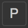 | P. Selects all protein atoms in the Workspace. | 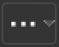 | More Objects. Additional common objects for quick selection. |
| 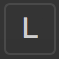 | L. Selects all ligand atoms in the Workspace. Replaced by "I", protein-protein interface, in BioLuminate. | All. Selects all atoms in the Workspace (displayed or not). | |

|
S. Selects all solvents or waters in the Workspace. | Deselect. Clears the current selection. |
| 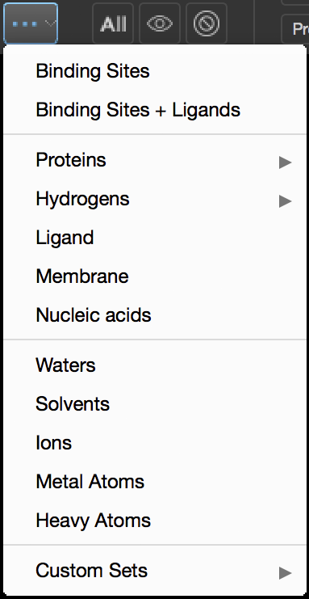 | Common Objects Menu. The following objects are included in the common objects menu:
|
1.5. More Selection Actions
| button | action | button | action |
|---|---|---|---|
| 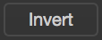 | Invert. Invert the Workspace selection. Selects all atoms not currently selected; deselects those already selected. | 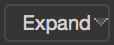 | Expand. Offers options for expanding the current selection by a chosen radial distance in Angstroms, or by including atoms with a matching quality. |
| 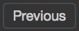 | Previous. Restores the last Workspace selection. | 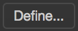 | Define. Opens the Atom Selection Dialog Box, allowing you to define a custom Workspace selection. |
1.6. Fitting
The fitting buttons change the Workspace zoom so that the fitted objects fill the Workspace, with a margin so that rotation can be done without any part of the structure going outside the Workspace.
| button | action | button | action |
|---|---|---|---|
| 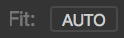 | Auto-Fit. When selected, automatically fit the Workspace view to all displayed atoms when entry inclusion is changed. | 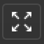 | Fit to Workspace. Fits the Workspace view to all displayed atoms. |
| Ligand Auto-fit. When selected, automatically fit the Workspace view to the ligand when entry inclusion is changed. The button is not present if auto-fit is off, or in the BioLuminate or Materials Science profiles. | Fit to Selection. Fits the Workspace view to the selected atoms. | ||
| Fit to Ligand. Fits the Workspace view to an individual ligand. When multiple ligands are present, repeated clicks move to the next ligand in sequence. Not present in the BioLuminate or Materials Science profiles. |
For more control over fitting, you can set preferences in the Fitting settings, under Workspace – Fitting.
1.7. Style Toolbox
The Style Toolbox applies formatting to the selected atoms. (If none are selected when the toolbox is opened, all atoms are selected temporarily for application of the style.) The options include visibility, color, representation style, atom labels, surfaces, and residue ribbons.
| button | action | button | action |
|---|---|---|---|
| Display Atoms. Makes selected atoms visible in the Workspace. Present when the selection is not visible. | Undisplay Atoms. Makes selected atoms invisible in the Workspace. Present when the selection is visible. | ||
| 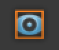 | Display Only. Displays the selected atoms and undisplays any unselected atoms. | 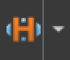 | Show polar hydrogens. Displays polar hydrogens and undisplays other hydrogens. Clicking the arrow offers other hydrogen options: Hide All Hydrogens, Show All Hydrogens. |
| Wire frame. Displays selected atoms in wire frame representation. | Thin Tube. Displays selected atoms in thin tube representation. | ||
| Thick Tube. Displays selected atoms in thick tube representation. | Ball and Stick. Displays selected atoms in ball and stick representation. | ||
| CPK. Displays selected atoms in CPK representation. |
| button | action | button | action |
|---|---|---|---|

|
Color Atoms. Applies a color scheme to the selected atoms. The left side of the button re-applies the last used color scheme, and the arrow on the right opens a menu for selecting and applying another color scheme. | Single color. Opens a menu of possible colors. Applies a single color to the selected atoms. | |
| Add Labels. Applies the current label scheme to the selected atoms. The left side of the button re-applies the last used label scheme. The arrow on the right opens a menu for selecting and applying another label scheme. | Remove Labels. Removes labels from selected atoms. | ||
| Add Ribbons. Adds and updates ribbons for any selected residues (four minimum), using the default color scheme and ribbon style from the Preferences panel. Edit the ribbon properties in the panel that opens below. Not present in the Materials Science profile. | 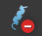 | Remove Ribbons. Removes ribbons from selected atoms. Not present in the Materials Science profile. | |
| 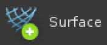 | Create Quick Surface. Creates a surface from the selected atoms (one per entry). |
You can edit the ribbon and its associated atoms in this pane, which opens when you click the Ribbons button in the Style toolbox, or if you right-click on a ribbon. Options include deleting the ribbon, changing the color scheme, changing the ribbon style, and hiding or showing some or all of the associated residue atoms. The action applies to all ribbon segments in which any of the corresponding residue atoms are selected, or all ribbons if there is no selection.
Tip - If ribbons aren't properly displayed, the secondary structure might not be assigned. Choose Edit → Assign → Secondary Structure to assign it.
1.8. Preset Styles
The left side of the Preset Styles split button applies the custom preset. The arrow on the right opens a dropdown containing pre-populated PyMOL presets. The Reapply preset when WS changes setting applies the custom preset anytime an entry is included in the Workspace. The protein-related items are not present in the Materials Science profile.
Tip - Double-click on the left side of the button to turn on 'Reapply preset when WS changes'.
1.9. Builder
The 3D Builder panel is the primary structure-editing and building tool of Maestro. It allows you to work directly in the 3D Workspace, selecting atoms and bonds to delete them, add to them, or change their properties.
This panel is opened by clicking the BUILD toggle button above the Workspace. The panel remains open until manually closed, and always floats above the main window.
1.9.1 Creating New Entries
| button | action | button | action |
|---|---|---|---|
| Create New Entry. Creates a new blank entry. | Duplicate Entry. Duplicates all entries currently in the Workspace (Duplicate In Place). Each new entry is named for its original entry, with a suffix added. | ||
| Copy Selected Atoms. Creates a new entry by copying the atoms selected in the Workspace. | 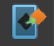 | Extract Selected Atoms. Creates a new entry by extracting the selected atoms from the entry or entries in the Workspace. |
1.9.2 Basic Edits
| button | action | button | action |
|---|---|---|---|
| Delete Atoms. Deletes all selected atoms and their bonds. | 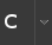 | Set Element. Button changes element of all selected atoms to what is shown on label. Arrow opens Element palette (see below). | |
| Delete Bonds. Deletes all bonds defined by selected atoms. Leaves atoms. | Add Bond. Adds a bond to the selected pair of atoms. | ||
| Increase Charge. Increases charge of all selected atoms by 1. | Decrease Charge. Decreases charge of all selected atoms by 1. | ||
| Increment Bond Order. Increases bond order of all selected bonds by 1, up to 3. | Decrement Bond Order. Decreases bond order of all selected bonds by 1, down to 0. |
1.9.3 Selecting the Element
Click the arrow beside the Set Element button to open this palette. Choosing an element changes the selected atoms and sets the main button to use this element. The “...” button opens another pane with the full periodic table. Recently used elements that are not already shown are preserved in the two empty slots.
1.9.4 Moving and Building
| button | action | button | action |
|---|---|---|---|
| 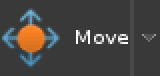 | Move Atoms. Initiates a mode that allows you to move selected atoms in a variety of ways:
|
Adjust Only Menu. Clicking the arrow button next to Move Atoms opens a menu of adjust-only options:
|
|
| 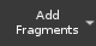 | Add Fragments. Opens a palette for adding fragments to selected atoms or bonds. Fragments offered include:
|
Fragments pane. Clicking a ring or other structure adds the fragment to the selected atoms or bonds in the Workspace, if possible. Each new fragment is temporarily accompanied by a Fragment Menu icon (see below). Clicking the "..." button or clicking More opens the Fragments Panel, where a large range of fragments is available. Clicking "Create Enumerated Entries" opens the Custom R-Group Enumeration Panel, which allows you to add multiple fragments to each selected atom and create a new entry for each fragment combination.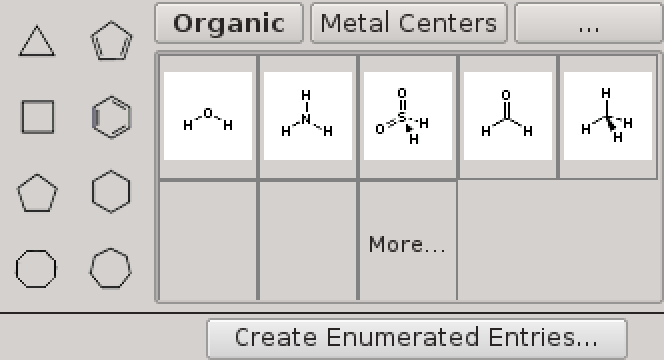 | |
Draw Structure. Initiates a mode that allows you to draw or erase bonds and atoms in the Workspace and change the element of existing atoms. The mode banner offers instructions and a set of tools:
|
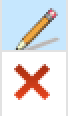 | Banner tools. The Pencil tool can be used with the Element palette to:
The Eraser tool can be used to:
Tip - turn off both the pencil and eraser tool to select atoms. Note that actions on one selected item affect all selected items. |
|
| Add Hydrogens. Adds any missing hydrogens to the selected atoms. | Minimize. Minimizes selected atoms (only). Maps to Ctrl+M on keyboard. |
1.9.5 Camera View Changes while Moving Atoms
To change the camera view while you are moving atoms, hold down the spacebar. An overlay appears on the Workspace (the "heads-up display") that allows you to choose the view change and then use the left mouse button to make the change. You can also use the normal actions to change the view.
1.9.6 Fragment Menu
This small icon appears alongside each newly added fragment and persists in the Workspace until an unrelated action is taken. Clicking the icon opens a menu of actions that are available for the new fragment. These actions vary with the fragment type and its connection, but may include:
- Flip to Alternate H / Flip Orientation
- Change Connection Point / Change Connection Side
- Rotate Dihedral
- Select Fragment
- Delete Fragment
The actions allow you to change the way in which the fragment is connected to the Workspace structure.
| Flip to Alternate H. Change the fragment connection to a different hydrogen atom on same fragment atom. |
| Flip Orientation. Flip the orientation of the ring so that the bond that is fused in the opposite direction. |
| Change Connection Point. Change the connection point on the fragment to another atom. Other connection points are marked, and hovering over a connection point displays arrows for the possible connections. Click on an arrow to choose the connection; click the marker to choose the default connection (shown in green). |
| Change Connection Side. Change the side of the ring that is connected to the Workspace structure, when a bond is replaced with the fragment. Other sides of the ring (bonds) are marked; click the marker to change to that side. |
| Rotate Dihedral. Rotate the fragment around the bond that connects it to the Workspace structure. |
| Select Fragment. Select the atoms in the fragment, so you can perform actions on the fragment. By default, the atoms you picked to add fragments to remain selected. |
| Delete Fragment. Remove the fragment and replace it with the original atoms. |
Note: Fragments created by selecting a single atom across a set of overlaid structures have just one Fragment Menu that operates on all the overlaid fragments. Only Select and Delete is offered in these circumstances.
1.9.7 More Editing Options
| button | action |
|---|---|
| 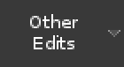 | Other Edits. Displays a menu of additional edit actions that can be applied to the selected atoms or bonds:
|
| Invert Chirality. Inverts chirality of any chiral atoms found among selected atoms. |
Convert Cis/Trans. Flips each bond of the correct type by 180 degrees. Enables only if at least one of these types is selected:
|
| Select Rotamer. Allows you to step through available rotamers for the selected residue. If the selected atoms represent a single residue, a banner with arrows and other controls opens in the Workspace. If the atoms represent more than one residue, the Rotamers dialog is opened instead. (This dialog can also be opened from the single-residue banner by clicking the 'i' icon.) |
| Find Torsions. Allows you to step through torsions of the selected dihedral bond on a ligand or other non-protein structure. Opens a banner similar to the Select Rotamer banner described above. The 'i' opens the Rapid Torsion Scan dialog. |
| Switch Alternate Positions. Allows you to switch to the alternate positions (if any) of the residues represented by the selected atoms. Remains disabled if no alternate positions are found in the selection. |
| Create Zero-Order Bonds to Metals. Creates zero-order bonds from surrounding atoms to selected metal atoms. |
| Change Isotope. Opens a small dialog allowing you to specify the isotope number for the selected atoms. Remains disabled if the selected atoms are not all the same element. |
| Mutate Residue. Opens a palette of possible residue types, allowing you to change the type of the selected residues. Includes a secondary palette of “variant” types; the two most recently selected of these are added to the main palette. |
| Set Residue Numbers. Opens a dialog that allows you to renumber the set of selected residues. |
| Change Other Properties. Opens a dialog with options to change other properties for the selected atoms. See Change Other Properties Panel. |
1.10. Project Panel Visibility
These two buttons allow you to show the project-related panels.
| button | action |
| Show or hide the Project Table panel. | |
| Show the Workspace Navigator panel, if it is hidden. |
1.11. Job Status
The Jobs button on the Selection Toolbar indicates when a job is running, has failed, or has completed. It also provides access to a small "mini-monitor" pane that lists the active jobs and provides access to the full Job Monitor panel.
Button States and Associated Actions
| button | action |
|---|---|
| Default. No jobs are currently running, and none have finished recently. To view older jobs from this or other projects, click to open the mini-monitor, then click the Monitor button at the bottom of the pane. | |
| 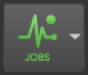 | Running. At least one job is currently running in this project. Click to view a list of the active jobs in the mini-monitor pane. For more details about a job, double-click the table row to view the job in the Monitor panel. |
| 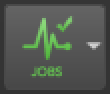 | Completed. No jobs are currently running, but one or more jobs completed successfully since the last time the mini-monitor was opened, and are waiting to be incorporated into the project. Click to open the mini-monitor, then click in the Inc column to incorporate the results for the job, or click the Monitor button for more information about the recently completed jobs. |
| 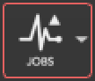 | Failed. At least one job from this project failed with errors, and the results have not yet been processed by Maestro. Note that this status overrides all others. To clear it, click to open the mini-monitor and locate the job with the pink background and the status of "died". Double-click the table row to view more details about the job in the Monitor panel. The status then changes to "failed", and the Jobs button returns to its normal state after the mini-monitor pane is closed. |
1.12. Task Tool
The Task Tool is the access point for all of the applications and commonly used tools in Maestro. There are several features that you can use to open a panel for an application or tool:
- Search. This field has the keyboard focus when you open the tool, so that you can immediately start typing to find an application or tool.
- Profile shortcut. Click on this row (if present) to display the main actions for the profile you are using.
- Browse. Opens out a pane for browsing through all the actions, categorized by topic, goal, or application.
- Recent actions. This is a list of your recent actions, which you can use to reopen a panel, displayed below the Browse row. (Right-click to delete.)
- Favorite actions. This is a configurable list of actions, displayed on the Favorites toolbar. It is pre-populated with a profile-specific set of actions.
When you start typing in the search tool, a suggested completion list appears below the search box. Click on an item from the list to select it for the search, or press Enter to use the search text as is.
The search results are shown in a pane to the left. Click on a result to open the panel or perform the action. If there are more results and the one you want isn't listed, click the arrow button to display the next page of results.
Tip - If you pressed Enter to run the search, you can keep typing to change the search, and press Enter again.
The Browse menu item opens out a pane with a grid of Task Categories and Applications. Click an item to navigate to the relevant actions.
Tip - When hovering over an item, click the Star outline to add it to the Favorites toolbar.
Tip - When hovering over an item, categories are gray, actions are blue.
The Favorites bar appears across the top of the Workspace, just below the Selection Toolbar. Several actions appear here by default, as shown. Click an item to perform the action.
Tip - To add your own favorite action, click the star outline beside the item in the Task Tool. Drag items on the toolbar to reorder them, right-click to delete.
2. Workspace Navigator
The Workspace Navigator is used for managing entries and interacting with structures in the Workspace. It is a single panel with two parts: the Entry List and the Structure Hierarchy.
The Entry List is a subset of the Project Table that offers:
- Inclusion of structures in the Workspace
- Selection of entry rows for management or tasks
- New entry creation through duplication, splitting, and merging
- Grouping and ungrouping of entries in a hierarchy
- Deleting entries
The Structure Hierarchy organizes and represents the structures and substructures included in the Workspace, providing various ways to act on them.
Tip - Use the button on the top left to collapse the Entry List or the Structure Hierarchy if you want to see more rows in the other tool, or drag the boundary between them.
2.1. Entry Hierarchy
The entry hierarchy offers the ability to organize entries in a flexible way by enabling the creation of groups within groups. Both the Entry List, which is part of the Workspace Navigator, and the Project Table panel, make full use of the hierarchy.
Major features:
- Nested groups
- Interspersed groups and entries (no special 'ungrouped' area)
- Group inclusion icon shows how many entries in the group are included
- Shortcut rows can be used to 'mirror' one or more rows at the top of the table, so they can't be scrolled out of view.
2.2. Structure Hierarchy
The Structure Hierarchy provides a hierarchical view of the entries currently included in the Workspace. It allows you to work with the structure at each level, offering a visibility toggle, a styling toolbox, and atom selection for each row of the tree.
Content Organization
Each entry in the Workspace is represented as a folder in the Structure Hierarchy, with an "All" folder at the top level if there is more than one entry in the Workspace. Depending on the type of entry, the folder for an entry may contain a single Ligands folder or a folder for Ligands, Proteins, Solvents, and Other. The Ligands folder contains all the ligands found in the entry, the Proteins folder contains the protein residues, and so on. In addition, there is a row for the current atom selection, so you can operate on it.
| button | status | button | status |
|---|---|---|---|
| Displayed. All children are displayed. For lowest items, at least one atom is displayed. | Undisplayed. All atoms in the substructure are undisplayed. | ||
| Partially Displayed. Substructure contains both displayed and undisplayed children. | Arrow. Indicates a folder. Opens (or closes) the substructure tree. |

Tip - Double click on an item to Fit the Workspace to it.
Tip - Click on the visibility toggle to display or undisplay atoms.
2.1. Navigator Panel
Adjust pane heights. The dark line above the Structure Hierarchy header is a splitter that can be dragged to adjust the relative heights of the panes. When the cursor changes as shown, drag the splitter , or double-click to set the height of both sections to 50%.
| Collapse. To close one of the two sections of the panel, click on the flattened rectangle at the right edge of the header. The other section expands to fill the available space. | |
| Expand. To restore a collapsed section to its previous height, click the open rectangle that appears at the same location. |
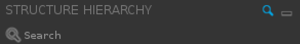
| Search. To search the contents of either pane, click the magnifying glass icon on the the corresponding header. A search field opens below it. On the Entry List, the filtering options are also shown (funnel icon). |
3. Footer Bar
The footer at the bottom of the Workspace contains the Status Bar and the Workspace Configuration toolbar.
The Status Bar provides information about the structures in the Workspace. The Workspace Configuration toolbar allows you to determine what sorts of auxiliary objects are shown and also provides access to the various gadgets and tools that enhance the Workspace.
3.1. Status Bar
The fixed area on the left of the status bar shows the selected, displayed, and total atoms and residues within the Workspace. These values are updated as the selection changes. Residue information is not given in the Materials Science profile.
When the pointer is not over an atom or ribbon, the area on the right summarizes the Workspace contents by the total number of atoms, residues, chains, molecules, entries and formal charge. In the Materials Science profile, chain and residue information is missing, but information is given on repeat units in polymers.
When the pointer is over an atom, the area on the right gives information about the atom, such as the element, PDB name, charge, and location within the structure. When the pointer is over a ribbon, information is given on the alpha carbon for the residue represented by that part of the ribbon.
3.2. Workspace Configuration Toolbar
The Workspace Configuration toolbar has a set of toggle buttons that allow you to temporarily mute (hide) any auxiliary objects currently available in the Workspace.
The buttons are blue when the objects are available and visible in the Workspace; they have a transparent background when available but muted; and they appear disabled when not available. Some of them have a ... button above that opens a toolbox or panel.
| button | action | button | action |
|---|---|---|---|
| Annotations. Toggles the display of Labels, Captions, and Highlights. | Measurements. Toggles the display of Distance, Angle, Dihedral measurements. Use the [...] to open the Measurements panel. | ||
| Surfaces. Toggles the display of surfaces in the Workspace. | Ribbons. Toggles display of Ribbons in the Workspace | ||
| Interactions. Toggles display of Interactions in Workspace. Use the [...] to open the Interactions panel. | More Configuration. Opens the Workspace Configuration panel. |
3.3. Workspace Configuration Toolbox
The Workspace Configuration toolbox consolidates options for laying out the Workspace and additional features of Maestro. Each item can be toggled, and some (when toggled on) offer additional options.
Workspace Toggles
|
Workspace Gadgets
|
Workspace Layout
|
3.4. Interactions Toolbox
Hovering over the Interactions toggle in the Workspace Configuration toolbar displays a “...” button that can be clicked to open the Interactions toolbox.
This toolbox offers show/hide toggles for three types of non-bonded interactions, each of which has subtypes that can also be toggled independently. You can thus hide any of the basic interaction types while preserving the state of the subtypes. Each of these interaction types also has an menu from which you can choose the atom sets to be used for the interaction; in all cases, the default is Ligand-receptor. The types and subtypes are as follows:
- Non-covalent bonds
- Hydrogen bonds
- Halogen bonds
- Salt bridges
- Aromatic H-bonds
- Pi Interactions
- Pi-pi stacking
- Pi-cation
- Contacts/Clashes
- Good
- Bad
- Ugly
3.5. Measurements Toolbox
Hovering over the Measurements button in the Workspace Configuration toolbar displays a “...” button that can be clicked to open the Measurements toolbox.
This toolbox includes tabs for each type of measurement currently found in the Workspace. The color of the markers for the measurement is shown next to the tab label.
You can double-click on a measurement row in the panel to fit the Workspace to that measurement, or right-click to open a context menu with these actions:
- Fit to Workspace—fit the Workspace to the measurement (zoom in on the measurement)
- Delete—delete the measurement
- Calculate Property—create a measurement property for each selected entry, using the atoms in the measurement. This is mainly useful for conformers as it uses the atom numbers.
The arrow button in the top right corner of the panel offers Delete All Measurements as well as Delete and Export actions for the measurements in the currently viewed tab. Exporting writes a plain text (CSV) file with the measurements in the current tab. The ruler button to the left of the arrow puts the Workspace in measurement mode and closes the toolbox.
3.6. Workspace Gadgets
3.6.1 2D Overlay
This optional Workspace Gadget displays a 2D version of any ligands or other small molecules in the Workspace.
Right-click on the pane to open a menu; if only a single structure is shown, this includes the option to open the structure in the 2D Sketcher.
Note: if the 2D Overlay is hidden, it can be displayed again via a toggle in the Workspace Configuration panel.
3.6.2 Workspace Properties
This Workspace gadget appears in the top left corner and displays the selected property information for the “target” entry in the Workspace.
When the pointer is moved into this region of the screen, it changes to a hand icon, to indicate that it is in the gadget. Clicking opens the Change Workspace Properties dialog, so you can add to, remove from, and rearrange the list of properties shown in this area. Right-clicking shows a menu from which you can open this dialog, and hide the properties.
Note: An entry is defined as the “target” if it is the only entry in the Workspace, or the only entry that is both included and selected.
4. Banners
Notification Banners
Notification banners report on the success or failure of background processes such as imports and jobs. If appropriate, they also include links to common “next steps”. These banners close automatically after a brief delay if you are working in Maestro; otherwise, they will remain until manually dismissed. If multiple notifications are received, they will be stacked up in sequence, and a summary banner will appear, as shown.
Mode Banners
Some actions - for instance, measurement and adjustment - require you to pick atoms in the Workspace in a particular sequence or otherwise use the mouse in a special way. When you choose such an action, the Workspace enters a special “mode.”
This mode is indicated by a mode banner, which remains open as long as you choose to keep working in that mode. Closing the banner or pressing the Esc or Enter key generally ends the mode.
Mode banners always include instructions or prompts for the specific actions to be taken; they may also include various options and a choice of ways to exit. Canceling out of the mode typically discards the most recent changes; selecting OK or Done or switching to another mode keeps the changes.
5. Menus
The Workspace has a number of shortcut (context) menus, whose content depends on what object you click on. These menus are described briefly below. A full description of the menus is given in Main Window Shortcut Menus.
5.1. Atom and Bond Selection Shortcut Menus
Right-clicking an atom or bond in the Workspace displays the appropriate shortcut menu for the selection.
The actions vary with the number of atoms or bonds selected, as indicated by the menu title. Measurements and adjustments are offered where applicable. Bond menus provide access to the corresponding Atoms menu; similarly, the 2 Atoms Selected menu may include a link to the 1 Bond Selected menu.
5.2. Surface Shortcut Menu
Right-clicking on a surface in the Workspace displays this menu.
Display Options opens a dialog for renaming and changing the appearance of the surface. Manage Surfaces opens a dialog showing all the surfaces currently included in the Workspace, whether visible or not.
Tip: To display this menu, move the mouse pointer to a point on the surface where there are no atoms underneath. The cursor icon changes to a surface-like patch.
5.3. Measurement Shortcut Menu
Right-clicking on a measurement in the Workspace displays this menu.
Move Measures initiates a mode for dragging any measurement label in the Workspace. The Adjust and Set options offer two ways to change the current value - by dragging atoms or by entering a specific number. The last two options also act on the current measurement only.
5.4. Highlight Text Shortcut Menu
Right-clicking on the text of a highlight in the Workspace displays this menu.
Edit Highlight Text opens the Edit Highlight Text dialog box, and does the same as a double-click on the text. Move allows you to drag the text to the desired location. Delete Text deletes the highlight text (no confirmation necessary). Manage Highlights opens the Manage Highlights Panel, with the highlight selected in the list.
5.5. Workspace Shortcut Menu
Right-clicking in an empty part of the Workspace displays this menu, which offers actions related to the entire Workspace from the Workspace and View main menus.
Configure Workspace opens the Workspace Configuration toolbox. Create New Entry offers a way to create an empty entry or duplicate the Workspace entries.
5.6. Main Menus
| menu | description |
|---|---|
| Maestro | Mac: standard application menu. All platforms: customization options. |
| File | Formerly “Project”. All project and structure actions. Includes Quit. |
| Edit | Actions related to changing structures and entries. Includes Preferences. |
| Select | Actions related to selection. |
| Workspace | Actions related to Workspace contents. Also includes appearance settings. |
| Scripts | Access point for user-defined scripts and KNIME workflows. |
| View | Actions for changing camera view, saving views, changing screen display. |
| Window | Access point for floating windows, pane and gadget toggles. |
| Help | Access to Help, Keyboard Shortcuts, Tutorials, etc. Also includes access to Contact Technical Support and Configure Licensing and Hosts dialogs. |